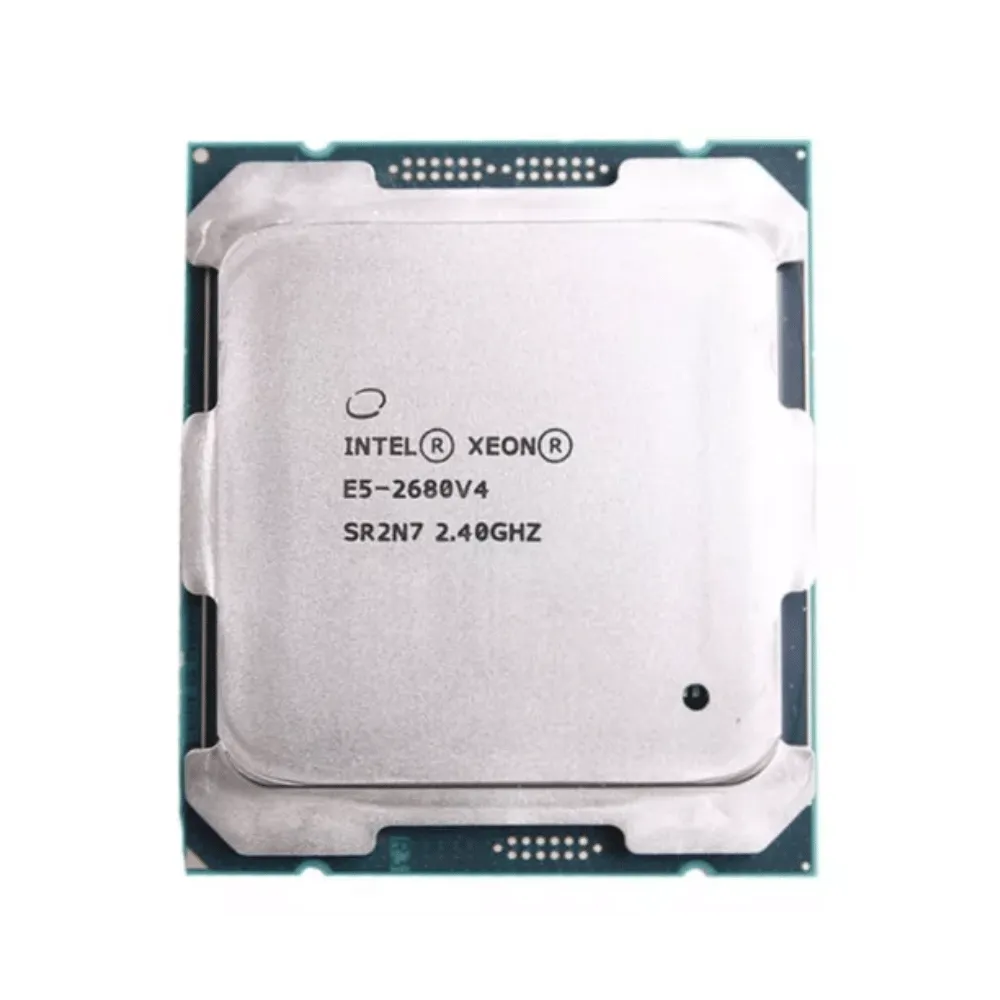

Confira aqui:
Todas as peças do hardware do meu setup!
Todas as peças do hardware do meu setup!
Xeon E5-2680 v4
 Este processador, com uma frequência base de 2.40 GHz, possui 14 núcleos físicos e 28 threads, oferecendo um desempenho poderoso e eficiente.